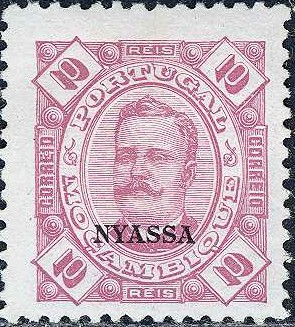
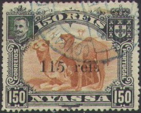
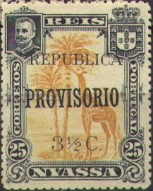

{kind=link}

Return To Catalogue - Portuguese Nyassaland, part 2 - Mozambique - Portugal
Note: on my website many of the
pictures can not be seen! They are of course present in the
catalogue;
contact me if you want to purchase the catalogue.
2 1/2 r brown 5 r yellow 10 r lilac 15 r brown 20 r violet 25 r green 50 r blue 75 r red 80 r green 100 r brown 150 r red on red 200 r blue on blue 300 r blue on lilac
Value of the stamps |
|||
vc = very common c = common * = not so common ** = uncommon |
*** = very uncommon R = rare RR = very rare RRR = extremely rare |
||
| Value | Unused | Used | Remarks |
| 2 1/2 r | ** | ** | Newspaper stamp |
| 5 r | ** | ** | |
| 10 r | ** | ** | |
| 15 r | ** | ** | |
| 20 r | ** | ** | |
| 25 r | ** | ** | |
| 50 r | ** | ** | |
| 75 r | ** | ** | |
| 80 r | ** | ** | |
| 100 r | * | ** | |
| 150 r | *** | *** | |
| 200 r | *** | *** | |
| 300 r | *** | *** | |
Reprints seem to have been made of the values 2 1/2 r, 5 r, 25 r, 80 r, 150 r and 300 r in 1906. I have no further information.
2 1/2 r grey 5 r orange 10 r green 15 r brown 20 r lilac 25 r green 50 r blue 75 r red 80 r lilac 100 r blue 150 r brown 200 r lilac 300 r blue
Value of the stamps |
|||
vc = very common c = common * = not so common ** = uncommon |
*** = very uncommon R = rare RR = very rare RRR = extremely rare |
||
| Value | Unused | Used | Remarks |
| 2 1/2 r | * | * | |
| 5 r | * | * | |
| 10 r | * | * | |
| 15 r | ** | * | |
| 20 r | ** | * | |
| 25 r | ** | * | |
| 50 r | ** | * | |
| 75 r | ** | ** | |
| 80 r | ** | ** | |
| 100 r | ** | ** | |
| 150 r | ** | ** | |
| 200 r | ** | ** | |
| 300 r | ** | ** | |
Giraffes

2 1/2 r brown and black 5 r violet and black 10 r green and black 15 r yellow and black 20 r red and black 25 r orange and black 50 r blue and black
Inverted centers seem to exist for all values (*** to R).
Value of the stamps |
|||
vc = very common c = common * = not so common ** = uncommon |
*** = very uncommon R = rare RR = very rare RRR = extremely rare |
||
| Value | Unused | Used | Remarks |
| 2 1/2 r | c | c | |
| 5 r | c | c | |
| 10 r | c | c | |
| 15 r | c | c | |
| 20 r | c | c | |
| 25 r | c | c | |
| 50 r | c | c | |
Camels


75 r red and black 80 r lilac and black 100 r brown and black 150 r orange and black 200 r green and black 300 r green and black
(Inverted center; apparently created on purpose as a speculative
issue)
Inverted centers seem to exist for all values (*** to R).
Value of the stamps |
|||
vc = very common c = common * = not so common ** = uncommon |
*** = very uncommon R = rare RR = very rare RRR = extremely rare |
||
| Value | Unused | Used | Remarks |
| 75 r | c | c | |
| 80 r | c | c | |
| 100 r | c | c | |
| 150 r | * | * | |
| 200 r | * | * | |
| 300 r | * | * | |
Surcharged (1903)


'65 REIS' on 80 r brown and black '65 reis' on 80 r brown and black '115 REIS' on 150 r orange and black '115 reis' on 150 r orange and black '130 REIS' on 300 r green and black '130 reis' on 300 r green and black
The 'reis' overprints were made locally.
Value of the stamps |
|||
vc = very common c = common * = not so common ** = uncommon |
*** = very uncommon R = rare RR = very rare RRR = extremely rare |
||
| Value | Unused | Used | Remarks |
| '65 REIS' on 80 r | c | c | |
| '65 reis' on 80 r | *** | *** | |
| '115 REIS' on 150 r | c | c | |
| '115 reis' on 150 r | R | R | |
| '130 REIS' on 300 r | c | c | |
| '130 reis' on 300 r | R | R | |
Overprinted 'Provisorio' locally

15 r yellow and black 25 r orange and black
Value of the stamps |
|||
vc = very common c = common * = not so common ** = uncommon |
*** = very uncommon R = rare RR = very rare RRR = extremely rare |
||
| Value | Unused | Used | Remarks |
| 15 r | RR | R | |
| 25 r | R | *** | |
Overprinted 'PROVISORIO'
15 r yellow and black 25 r orange and black '5 REIS' on 2 1/2 r brown and black '50 REIS' on 100 r brown and black
Value of the stamps |
|||
vc = very common c = common * = not so common ** = uncommon |
*** = very uncommon R = rare RR = very rare RRR = extremely rare |
||
| Value | Unused | Used | Remarks |
| 15 r | c | c | |
| 25 r | c | c | |
| 5 r on 2 1/2 r | ** | ** | |
| 50 r on 100 r | * | * | |
Overprinted 'REPUBLICA' and surcharged with value in cents (1919)
1/4 c on 2 1/2 r brown and black 1/2 c on 5 r violet and black 1 c on 10 r green and black 1 1/2 c on 15 r brown and black 2 c on 20 r red and black 3 1/2 c on 25 r orange and black 5 c on 50 r blue and black 7 1/2 c on 75 r red and black 8 c on 80 r lilac and black 10 c on 100 r brown and black 15 c on 150 r brown and black 20 c on 200 r green and black 30 c on 300 r green and black
Value of the stamps |
|||
vc = very common c = common * = not so common ** = uncommon |
*** = very uncommon R = rare RR = very rare RRR = extremely rare |
||
| Value | Unused | Used | Remarks |
| 1/4 c on 2 1/2 r | RR | RR | |
| 1/2 c on 5 r | RR | RR | |
| 1 c on 10 r | RR | RR | |
| 1 1/2 c on 15 r | *** | *** | |
| 2 c on 20 r | ** | ** | |
| 3 1/2 c on 25 r | * | * | |
| 5 c on 50 r | * | * | |
| 7 1/2 c on 75 r | * | * | |
| 8 c on 80 r | * | * | |
| 10 c on 100 r | ** | ** | |
| 15 c on 150 r | *** | *** | |
| 20 c on 200 r | ** | ** | |
| 30 c on 300 r | *** | *** | |
Overprinted 'REPUBLICA' and 'PROVISORIO'

1 1/2 c on 15 r brown and black 3 1/2 c on 25 r orange and black
Value of the stamps |
|||
vc = very common c = common * = not so common ** = uncommon |
*** = very uncommon R = rare RR = very rare RRR = extremely rare |
||
| Value | Unused | Used | Remarks |
| 1 1/2 c on 15 r | *** | *** | |
| 3 1/2 c on 25 r | * | * | |
Overprinted 'REPUBLICA' and surcharged twice (1919)
40 c on 65 r on 80 r lilac and black 50 c on 115 r on 150 r brown and black 1 $ on 130 r on 300 r green and black
Value of the stamps |
|||
vc = very common c = common * = not so common ** = uncommon |
*** = very uncommon R = rare RR = very rare RRR = extremely rare |
||
| Value | Unused | Used | Remarks |
| 40 c on 65 r on 80 r | *** | *** | |
| 50 c on 115 r on 150 r | *** | *** | |
| 1 $ on 130 r on 300 r | *** | *** | |
Stamps - Selos - Briefmarken - Timbres-Poste - Postzegels - Francobolli - Estampillas
{kind=link}